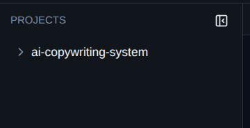
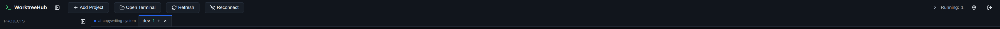
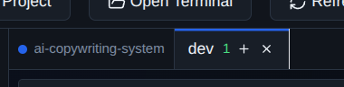
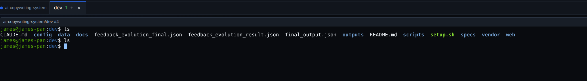
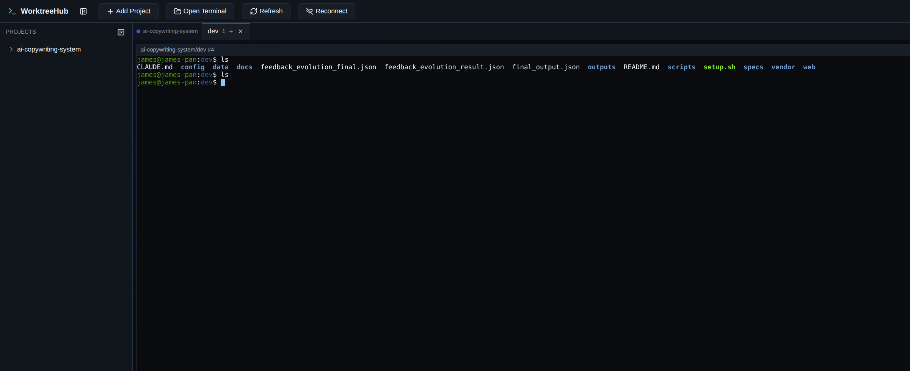
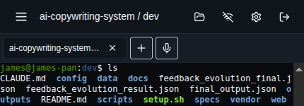
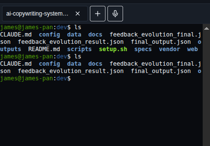
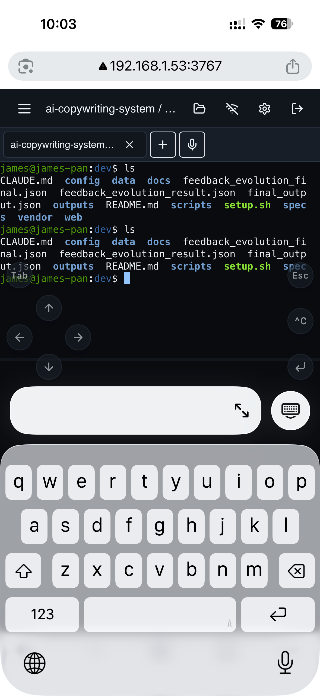

01 / 项目上下文
把项目和 worktree 放进一个清楚的侧边栏
项目、分支、worktree 和状态集中呈现。你不用再靠文件夹命名或终端标题去猜当前上下文。

在一个本地 Web 应用里管理 Git worktree、打开真实终端、保留运行中的会话。少一点反复切分支，少一点窗口混乱，少一点上下文丢失。
WorktreeHub 把分支、目录、终端和运行状态组织在一起，减少切换带来的认知成本。
新 worktree 最浪费时间的地方，不是创建目录，而是之后那串重复的初始化：安装依赖、复制环境变量、迁移数据库、启动 dev server。把这些动作写进项目级 setup 脚本，WorktreeHub 会在创建新工作区时自动执行。
不隐藏真实的 Git 和 Shell，只把它们放到更容易理解、更容易继续工作的界面里。
项目、分支、worktree 和状态集中呈现。你不用再靠文件夹命名或终端标题去猜当前上下文。

围绕创建、切换和管理 worktree 的高频动作，减少在多个窗口之间来回寻找。

终端标签直接和 worktree 对应。每个工作单元都有清晰归属，切换更直接，出错更少。

不是静态日志，也不是模拟器。你可以进入当前 worktree 的真实 Shell，继续写命令、看输出、跑任务。

离开工位时，用另一台电脑或手机重新进入本地开发上下文。浏览器刷新不等于任务中断，后台还在跑的构建、测试和脚本都能继续跟进。

移动端顶部保留项目入口、终端入口、重连、设置和快捷操作按钮。针对手机宽度重新安排信息和触控区域，不是简单把桌面页面缩小。

长时间构建、测试、脚本执行时，不必回到电脑前才能知道进度。终端内容保持清晰，当前任务一眼可见。

移动端提供针对手机操作优化的快捷按钮：补输入、移动光标、发送命令、打断任务，不需要在狭窄的虚拟键盘里反复切换。
